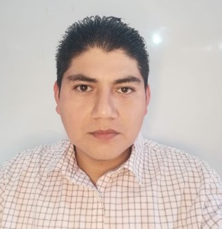

Teléfono: 0992659987 | Email: danilo-18w@hotmail.com
Dirección: Virgen del Cisne, El Triunfo, Ecuador
Consolidar mi desarrollo profesional en un entorno que valore la experiencia técnica y la innovación, aplicando mis más de 15 años de trayectoria en climatización, refrigeración, electricidad y electrónica aplicada. Aspiro a seguir aportando desde mi rol como emprendedor, docente y técnico, liderando proyectos que integren tecnología y conocimiento práctico para generar soluciones efectivas y formar nuevas generaciones de profesionales.